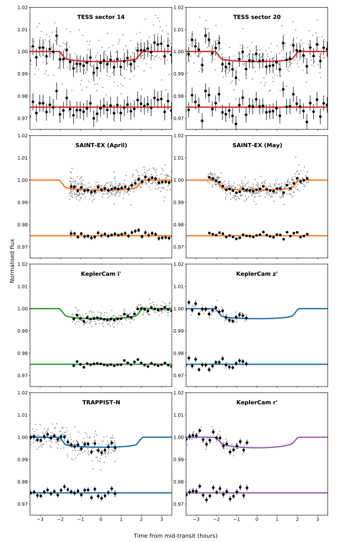
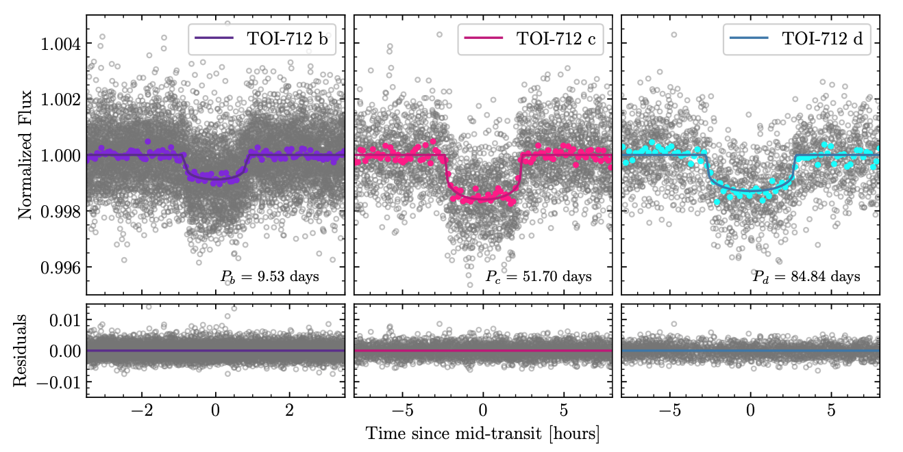

STATUS UPDATE: This December TESS will be present at the winter AGU check out the webpage for more details.
Welcome TESS followers! This week we are looking at three papers from the archive,
TOI-2257 b: A highly eccentric long-period sub-Neptune transiting a nearby M dwarf (Schanche et. al., 2021) :
In this paper the authors present the discovery of TOI-2257 b, a sub-Neptune planet around an M3 host star known as TIC 198485881 which is located 57.8 pc away.
The planet has a transit depth of 0.4%, making ground-based followup observations possible. The duration of the planets orbit around its host would suggest a highly eccentric orbit with e ~0.5, which would make it the most eccentric planet known to be transiting an M-dwarf star.
Utilizing both TESS and ground-based data (observations from the 1.0-m SAINT-EX, 0.60-m TRAPPIST-North and 1.2-m FLWO telescopes) the authors determined that the planet has a radius of 2.2 R⊕, and an orbital period of 35.19 days. Additional data and packages are also used to confirm the authors planetary interpretation.
TOI-712: a system of adolescent mini-Neptunes extending to the habitable zone (Vach et. al., 2021) :
The TESS mission enables the detection of the rarest kinds of transiting exoplanets, including the youngest planets, and as such the mission enables the study of evolutionary processes. Utilizing TESS data the authors discovered a young, multi-planet system orbiting a K4.5V star known as TOI-712 which has a V-band magnitude of 10.838, a mass of 0.733 M⊙, a radius of 0.674 R⊙, and an effective temperature of 4622 K.The TESS light curve indicated a rotation period of 12.48 days, and an age between 500 Myr and 1.1Gyr.
The photometry of the system indicates that there are three transiting mini-Neptunes with the following properties:
- Planet b: Radius = 2.049 R⊕, Period = 9.531 days
- Planet c: Radius = 2.701 R⊕, Period = 51.699 days
- Planet d: Radius = 2.474 R⊕, Period = 84.839 days
An additional Earth sized planet has also been detected with a radius of 0.81 R⊕ and orbital period of 4.32 days. This planet is thought to be on the inner edge of the habitable zone which is 0.339-0.844 au.
Distances for the RR Lyrae stars UU Ceti, UW Gruis, & W Tucanae (Parker et. al., 2021) :
In 2020 three RRab type stars were observed in the B,V,i,z bandpasses, these were UU Ceti, UW Gruis, and W Tucanae. Using the period-luminosity relationships of Catalen et al. (2004) and Caceres & Catelan (2008) distances were derived, with results consistent to those presented by the Gaia Early DR3.
Taking the TESS data available for UU Cet and W Tuc Fourier decompositions were applied, and using a stepwise linear regression, an empirical relationship between the decomposition and the pulsation period with metallicity [Fe/H] was derived. This derivation allowed for the calculation of the metallicities of the two objects, which are consistent with those found in the literature.

Fig. 1: Taken from Schanche et. al., (2021). Photometric observations of TOI-2257 with the best-fit transit parameters over-plotted. Thick black points show 10-minute bins, with all data points shown in gray. Residuals from the model fit are shown with an arbitrary offset below the transit. Note only 10-minute binned residuals are shown for clarity. The color of the line reflects the filter used for the observations (red for TESS, orange indicates I+z, green is i’, blue for z’, and purple for r’).

Fig. 2: Taken from Vach et. al., (2021). The panels show the phase folded transits and residuals for each planet. Colored circles indicate binned data, and the colored lines are the best-fit EXOFASTv2 models.